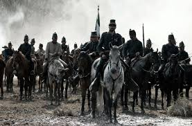

Debido principalmente a la cantidad de deudas, , Inglaterra y España subscribieron el Convenio de Londres, por el cual se comprometieron a intervenir por el uso de la fuerza en México para reclamar sus derechos como acreedores, mientras tanto el Presidente Benito Juárez declaró suspendidos los compromisos adquiridos y aplazó pagar la deuda a las naciones europeas. Tras desembarcar en Veracruz, España e Inglaterra aceptaron las explicaciones mexicanas dadas en los Tratados de La Soledad, los cuales tenían como fundamento, el respeto a la soberanía territorial, el reconocimiento de las naciones acreedoras al Estado Mexicano, la entrada al terreno de las negociaciones para llegar a acuerdos en común, que beneficiaría tanto a la República Mexicana, como a los intereses de las potencias invasoras, y por último, se permitiría que los soldados de los tres países se establecieran en las ciudades mexicanas de Orizaba, Córdoba y Tehuacán durante las negociaciones, debido a lo malsano del clima imperante en el puerto de Veracruz; en caso contrario, los soldados de las tres potencias se retirarían a las costas de Veracruz para así comenzar las hostilidades.
Solo los representantes de España e Inglaterra comprendieron la situación que guardaba la República Mexicana, al analizar los argumentos, decidieron negociar de manera independiente ante la autoridad mexicana, privilegiando a la nación mexicana con un triunfo diplomático, que dadas las difíciles circunstancias, permitió encauzar esfuerzos posteriormente hacia la intervención del Imperio Francés; pero ellos tenían otros planes. El primero, el pronto pago con intereses de la deuda, esto incluía un cobro exagerado por parte de la "Casa Jecker", debido a destrozos causados durante la Guerra de Reforma, dos, tener control total y absoluto de las aduanas, así como intervención directa en la política económica del país, y tres, el más común, imponer un gobierno monárquico en México, con miras a contrarrestar el creciente poderío de los Estados Unidos.
Sin embargo, un mal entendido por parte de los representantes de las tres potencias, aunado a los ambiciosos planes de la representación francesa de sus propios tratados, inicio pronto las hostilidades con el ejército de Napoleón III, dando por iniciada la Segunda Intervención Francesa en México.



 1
1 2
2 8
8